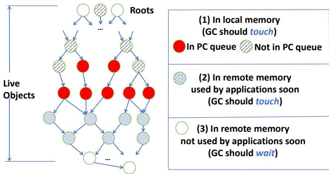
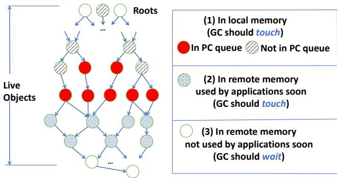
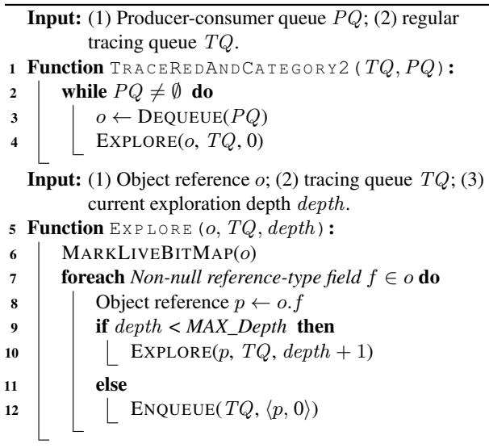
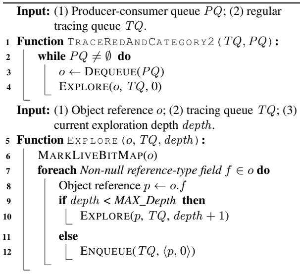

MemLiner: Lining up Tracing and Application for a Far-Memory-Friendly Runtime 论文解析¶
0. 论文基本信息¶
作者 (Authors): Chenxi Wang, Haoran Ma, Shi Liu, et al.
发表期刊/会议 (Journal/Conference): OSDI
发表年份 (Publication Year): 2022
研究机构 (Affiliations): University of California, Los Angeles, University of Chicago
1. 摘要¶
目的
- 解决在 far-memory（远内存）系统中，垃圾回收（GC）线程与应用程序线程因内存访问模式不一致而导致的严重性能问题。
- 具体问题包括：(1) 两者工作集分离，导致本地内存资源竞争和频繁的page fault；(2) 混合的随机访问模式使远程内存预取（prefetching）失效。
方法
- 提出 MemLiner，一种运行时技术，其核心思想是 “working set alignment”（工作集对齐），即让 GC 线程的内存访问路径与应用程序线程对齐。
- 实现了两大关键技术：
- 应用与 GC 协调：利用 JVM 的 read/write barrier，让应用线程将其访问的对象指针推送到一个生产者-消费者队列（PQ）中，GC 线程优先处理这些对象，实现即时追踪。
- 基于优先级的追踪算法：当 PQ 为空时，GC 执行常规图遍历，但会根据对象的位置估计来决定是否延迟处理。
- 对象位置估计：通过修改 64 位对象指针格式，预留 4 位作为 **timestamp **(ts)，记录该指针上次被解引用时的 epoch ID。通过比较 ts 与当前 epoch ID 来判断对象是否可能仍在本地内存中。
- 自适应延迟：引入 MAX_DL 参数，根据堆内存可用率（红/黄/绿区）动态调整对远程对象的追踪延迟，以平衡内存回收的紧迫性与性能干扰。
 Figure 1: Our main idea: the working sets of GC threads, in blue, and application threads, in red, during a time window (a) without or (b) with the access alignment from MemLiner.
 Figure 4: Classification of reachable objects in the heap: red objects are being accessed by the application and shaded objects are what MemLiner intends to trace.
Figure 1: Our main idea: the working sets of GC threads, in blue, and application threads, in red, during a time window (a) without or (b) with the access alignment from MemLiner.
 Figure 4: Classification of reachable objects in the heap: red objects are being accessed by the application and shaded objects are what MemLiner intends to trace.
结果
- 在 OpenJDK 12 的 G1 和 Shenandoah 两种 GC 上实现了 MemLiner，并使用 Spark、Cassandra、Neo4j 等云应用进行评估。
- 端到端性能提升： | GC 类型 | 本地内存 25% | 本地内存 13% | | :------------- | :----------: | :----------: | | G1 | 1.48× | 1.51× | | Shenandoah | 2.16× | 1.80× |
- Swap 行为优化：平均减少了 81% 的按需 swap-in 和 56% 的总 swap-in。
- 预取效果提升：与 Leap 预取器结合使用时，预取覆盖率和准确率分别提升了 1.5× 和 1.7×。
- 对比现有方案：性能与将 GC 完全卸载到远程服务器的 Semeru 相当，但无需侵入式修改或额外的远程计算开销。
 Figure 6: Performance comparisons between G1 GC (yellow bars) and MemLiner (green bars) under two local memory ratios: 25% and 13%; each bar is split into application (bottom with light colors) and GC (top with dark colors) time in seconds. The two dashed lines show application time and total time with unmodified JVM and 100% local memory (no swaps).
Figure 6: Performance comparisons between G1 GC (yellow bars) and MemLiner (green bars) under two local memory ratios: 25% and 13%; each bar is split into application (bottom with light colors) and GC (top with dark colors) time in seconds. The two dashed lines show application time and total time with unmodified JVM and 100% local memory (no swaps).
 Figure 8: Performance comparison with Shenandoah GC [25].
Figure 8: Performance comparison with Shenandoah GC [25].
 Figure 9: Performance comparisons with Leap and Semeru; Semeru crashed on NPR, NTR, and NDC (i.e., Neo4j applications).
Figure 9: Performance comparisons with Leap and Semeru; Semeru crashed on NPR, NTR, and NDC (i.e., Neo4j applications).
结论
- MemLiner 通过巧妙地对齐应用与 GC 的内存访问，有效缓解了 far-memory 系统中的线程级干扰问题。
- 该方案是一种非侵入式、易于采用的通用技术，可与现有的 swap 优化（如 InfiniSwap）和预取器（如 Leap）无缝集成，为数据中心中广泛使用的托管语言应用提供了显著的性能提升。
2. 背景知识与核心贡献¶
研究背景
- 现代数据中心面临严重的 内存约束，而 far-memory（远内存） 技术通过利用远程服务器的内存来扩展本地内存容量，成为一种极具吸引力的解决方案。
- 主流的 far-memory 系统通常基于 cache-and-swap（缓存与交换） 机制，并严重依赖 良好的内存局部性 和 有效的远程内存预取 来维持性能。
- 数据中心的主流工作负载大量使用 高阶语言（HLLs）（如 Java），其运行时依赖 垃圾回收（Garbage Collection, GC） 进行自动内存管理。现代 GC（如 G1、Shenandoah）普遍采用 并发追踪（concurrent tracing） 以减少停顿时间。
研究动机
- GC 与应用程序的内存访问模式存在严重干扰：应用程序线程根据其执行逻辑访问对象，而 GC 线程则对堆进行图遍历以标记存活对象。这两种访问模式是 不协调且互不相关的，导致它们的 工作集（working set） 分离。
- 这种分离引发了两大核心问题：
- 资源竞争（Resource Competition）：应用程序和 GC 相互驱逐对方所需的内存页，导致 严重的本地内存缺失（local-memory misses），并加剧了对 RDMA 带宽的竞争。
- 预取失效（Ineffective Prefetching）：从 OS 的角度看，混合了应用和 GC 访问的内存轨迹显得 高度随机，使得 OS 级别的预取器（如 Leap）无法识别清晰的访问模式，从而放弃或错误地进行预取。
- 简单地 禁用并发追踪 并非可行方案，因为这会显著增加 stop-the-world GC 暂停时间，反而恶化端到端性能（如图3所示）。
 (a) End-to-end execution time. (b) GC pause time. Figure 3: Concurrent tracing improves overall performance. (Data is from 10 runs of each program; dots are outliers.)
(a) End-to-end execution time. (b) GC pause time. Figure 3: Concurrent tracing improves overall performance. (Data is from 10 runs of each program; dots are outliers.) - 现有工作要么针对 原生语言（native languages）（如 AIFM），要么采用 侵入式架构 将 GC 完全卸载到远程服务器（如 Semeru），这些方案难以在现有数据中心中广泛部署。
核心贡献
- 提出了 MemLiner，一种 非侵入式、易于采用 的运行时技术，旨在通过 “对齐”（lining up） 应用程序线程和 GC 线程的内存访问路径来解决上述问题。
- 核心思想是工作集对齐（working set alignment）：MemLiner 利用两个关键观察：
- 应用和 GC 访问的对象并非完全无关，只是 时间上未对齐。
- 可以安全地 重排 GC 的对象追踪顺序 而不影响正确性。
- 具体实现机制：
- 应用与 GC 协调：通过 读写屏障（read/write barrier），应用线程将其访问的对象指针发送给 GC，使 GC 能立即追踪这些对象。
- 智能追踪算法：MemLiner 将存活对象分为三类（本地内存中的、即将被使用的、暂不使用的），并设计了一套 基于优先级的追踪算法。该算法优先追踪前两类对象，并巧妙地 推迟 对第三类（很可能在远程）对象的追踪，以避免不必要的页面错误和交换。
- 自适应机制：引入 epoch-based 时间戳 来高效估计对象是否在本地内存中，并根据 堆内存可用率 动态调整追踪延迟策略，以平衡性能和 GC 进度。
- 成果与影响：
- 在 OpenJDK 的 G1 和 Shenandoah GC 中实现了 MemLiner。
- 在多种真实云应用（Spark, Cassandra, Neo4j 等）上的评估表明，MemLiner 能将 端到端性能最高提升 2.5×。
- 显著提升了底层预取器（如 Leap）的 覆盖率（coverage） 和 准确率（accuracy），分别提高了 1.5× 和 1.7×。
- 与 Semeru 等方案相比，MemLiner 无需修改应用、无需远程计算开销，即可获得可比的性能，具有极强的实用性和兼容性。
3. 核心技术和实现细节¶
0. 技术架构概览¶
整体技术架构
MemLiner 的核心目标是解决在 far-memory（远内存）系统中，垃圾回收（GC）线程与应用（Application）线程因内存访问模式不一致而导致的性能问题。其架构设计是一种非侵入式的运行时技术，通过“对齐”两者的内存访问路径来优化性能。
- 设计哲学：MemLiner 采取了一种 easy-to-adopt, non-intrusive 的方法。它不重新设计操作系统、预取器或 GC 算法，也不将 GC 卸载到远程服务器，而是通过修改运行时（Runtime）内部的协调机制来实现优化。
- 核心洞察：
- 应用线程和 GC 线程访问的对象并非完全无关，只是在时间上未对齐。
- 应用线程的访问顺序受程序语义约束，不可更改；但 GC 线程的遍历顺序（如标记对象的先后）可以调整，而不影响正确性。
- 主要组件：
- 应用-GC 协调机制：利用 JVM 已有的 read/write barrier（读写屏障），在应用线程每次访问堆对象时，将其访问的对象指针推送到一个线程本地的生产者-消费者队列（PQ）中。
- 优先级驱动的追踪算法：GC 线程会优先处理 PQ 中的对象（即应用刚访问过的对象），并向前探索少量引用（默认3跳），以覆盖应用即将访问的对象。
- 基于时代的对象位置估算：为避免昂贵的系统调用来查询对象是否在本地内存，MemLiner 在 64-bit 对象指针中预留了 4 bits 作为 timestamp（时代戳）。每当对象被访问或分配时，其指针的时代戳会被更新为当前时代ID。GC 通过比较指针时代戳与当前时代ID来估算对象是否仍在本地缓存中。
- 自适应延迟策略：对于估算为远程的对象，GC 不会立即追踪，而是将其推迟处理。推迟的最大次数 MAX_DL 会根据堆内存的可用率动态调整（red zone \<15%: MAX_DL=0; yellow zone 15%-50%: MAX_DL=2; green zone >50%: MAX_DL=4），以平衡内存回收的紧迫性和减少干扰。
Figure 1: Our main idea: the working sets of GC threads, in blue, and application threads, in red, during a time window (a) without or (b) with the access alignment from MemLiner.
- 集成与兼容性：
- MemLiner 被集成到 OpenJDK 12 的两种主流 GC 中：G1 和 Shenandoah。
- 它构建在标准的 OS paging/swap 机制之上，因此可以与现有的远内存交换优化（如 InfiniSwap, FastSwap）无缝协作。
- 对应用完全透明，无需任何代码修改。
关键技术流程
- 应用线程执行：
- 在 read/write barrier 中，检查对象指针的时代戳。
- 如果对象尚未被标记为存活，则将其指针（附带当前时代戳）推入线程本地的 PQ。
- GC 线程执行：
- 模式一（高优先级） 当 PQ 非空时，从中取出对象，立即进行标记，并递归地向前探索最多 MAX_Depth（默认为3）层的引用进行标记。
- 模式二（常规遍历） 当 PQ 为空时，从常规的追踪队列 TQ 中取出对象。通过比较对象指针的时代戳与当前时代ID来判断其位置：
- 如果时代戳相近（
DIFF ≤ δ），认为对象在本地，立即标记。 - 否则，认为对象在远端，将其重新放回 TQ 并增加其延迟计数器
dl。 - 如果
dl达到 MAX_DL，则强制标记该对象，确保 GC 能够最终完成。
- 如果时代戳相近（
Figure 4: Classification of reachable objects in the heap: red objects are being accessed by the application and shaded objects are what MemLiner intends to trace.
 

1. 基于读写屏障的应用-GC协调机制¶
实现原理与核心机制
- MemLiner 的协调机制完全建立在 JVM 读写屏障 (read/write barrier) 之上，这是一种在每次堆内存读写操作时都会执行的运行时代码片段。
- 其核心思想是将应用线程的实时访问行为作为信号，动态地引导 GC 线程的追踪路径，从而实现工作集对齐。
- 具体流程为：当应用线程执行
a = b.f(读) 或b.f = a(写) 时，屏障代码会捕获被解引用的对象b的指针，并将其推送到一个线程本地的生产者-消费者队列 (PQ) 中。 - 这个 PQ 是一个无锁的环形缓冲区 (non-blocking ring buffer)，由应用线程（生产者）单向写入，无需任何同步开销。
- GC 的并发追踪线程（消费者）会持续轮询所有应用线程的 PQ。一旦发现非空，便立即从中取出对象指针进行追踪和标记。
Figure 1: Our main idea: the working sets of GC threads, in blue, and application threads, in red, during a time window (a) without or (b) with the access alignment from MemLiner.
算法流程与关键设计
- 生产者端 (应用线程):
- 在读写屏障中，首先检查目标对象在全局存活位图 (global live bitmap) 中是否已被标记为存活。
- 如果未被标记，则将其指针推入线程本地的 PQ。
- 由于 PQ 是固定大小的环形缓冲区，当队列满时，新条目会覆盖旧条目。这被视为一种可接受的优化，因为被覆盖的对象最终仍会在 GC 的常规图遍历中被处理，只是优先级降低。
- 消费者端 (GC线程):
- GC 线程采用抢占式调度策略。在其主遍历循环（处理标准追踪队列 TQ）中，会不断检查 PQ 是否有新任务。
- 一旦 PQ 非空，GC 线程会中断当前的常规遍历，转而处理 PQ 中的对象（即论文中的“红色对象”）。
- 处理 PQ 对象时，不仅会标记该对象本身，还会通过一个名为
EXPLORE的递归函数，向前追踪最多 MAX_Depth (默认值为3) 跳的引用，以覆盖应用即将访问的邻近对象（即论文中的“波浪线对象”），实现预取成本的“预支付”。
参数设置与优化
- MAX_Depth: 设定为 3，这是一个经验值，足以覆盖同一逻辑数据结构内的大部分对象，同时避免因追踪过深而引入不必要的远程页面交换。
- PQ 大小: 实验中设置为 1024 个条目。结合 G1 GC 推荐的并行 GC 线程数（核心数的 5/8）和并发追踪线程数（并行线程数的 1/4），此大小能有效避免在典型工作负载下发生频繁覆盖。
- 过滤优化 (针对G1 GC): 为了最小化屏障开销，MemLiner 对 G1 GC 应用了三项关键优化：
- 仅在并发追踪阶段启用 PQ 入队操作。
- 利用 G1 的分代特性，过滤掉所有年轻代 (young generation) 的对象引用，因为并发追踪只关注老年代。
- 在更新指针时间戳前，先检查其时间戳是否已等于当前epoch ID，若是则跳过更新，减少冗余操作。
输入输出关系及整体作用
- 输入: 应用线程在执行过程中对堆对象的实时读写操作。
- 输出: 一个动态的、高优先级的待追踪对象列表（通过 PQ 传递给 GC 线程）。
- 在整体中的作用:
- 这是 MemLiner 工作集对齐 (working set alignment) 策略的第一步，也是最关键的一步。
- 它直接解决了 Problem 1 (资源竞争) 和 Problem 2 (无效预取) 的根源。通过让 GC 紧随应用的访问足迹，两者的工作集高度重叠，极大减少了相互驱逐对方页面的情况。
- 同时，它将原本由应用和 GC 产生的混合随机访问模式，简化为以应用访问模式为主导的更清晰、更具可预测性的模式，使得底层的 OS 预取器（如 Leap）能够有效工作。
2. 基于Epoch的时间戳指针编码¶
核心机制：基于Epoch的时间戳指针编码
- 设计目标：为了解决在远内存环境下，GC线程因盲目遍历堆图而频繁触发远程页面交换的问题，MemLiner需要一种轻量级、低开销的方法来估计一个对象是否很可能驻留在本地内存中。
- 核心洞察：一个对象如果最近被应用程序访问过，那么它极有可能还在本地内存缓存中。因此，记录对象的“最后访问时间”是关键。但传统的系统调用查询页表开销巨大，不可行。
- 创新方案：MemLiner将“最后访问时间”的概念与一个由内核维护的、反映本地缓存稳定性的逻辑时钟——Epoch——相结合，并将该信息直接编码到64位对象指针本身。
指针格式修改与Epoch定义
- MemLiner利用了64位JVM指针中未被完全使用的地址空间。如图所示，它预留了高4位作为时间戳（ts），用于存储Epoch ID。
Figure 6: Performance comparisons between G1 GC (yellow bars) and MemLiner (green bars) under two local memory ratios: 25% and 13%; each bar is split into application (bottom with light colors) and GC (top with dark colors) time in seconds. The two dashed lines show application time and total time with unmodified JVM and 100% local memory (no swaps).
- Epoch的定义：一个Epoch代表一段执行周期，在此期间，属于JVM进程的本地内存页集合相对稳定（即换入/换出的页面数量变化小于一个阈值N%）。
- Epoch的更新：内核的交换子系统负责监控JVM进程的页面缓存。当缓存中的页面集合发生显著变化时，内核会递增一个全局的Epoch计数器。这使得Epoch ID成为一个反映缓存“新鲜度”的动态指标。
算法流程与实现细节
- 指针初始化：当通过
new操作分配一个新对象时，其指针的ts字段会被立即设置为当前的Epoch ID。
- 指针更新（关键步骤）：每当应用程序线程通过读/写屏障（read/write barrier）解引用一个对象指针（例如
a = b.f）时，MemLiner会执行以下操作：- 将被解引用的对象
b的指针ts字段更新为当前的Epoch ID。因为这次解引用操作保证了对象b此刻就在本地内存中。 - 如果
b.f本身也是一个对象引用，MemLiner还会将a的指针（带有最新的Epoch ID）写入b.f，这是一种前瞻性的预取提示，暗示a可能很快也会被访问。
- 将被解引用的对象
- 循环利用：由于ts字段只有4位，Epoch ID的范围是0-15。当计数器达到15后，下一次更新会回绕到0，形成一个循环。
在GC追踪算法中的应用
- 在MemLiner的主追踪逻辑（Algorithm 3）中，当GC线程从常规追踪队列（TQ）中取出一个待处理的对象
o时，它会执行以下判断：- 比较
o的指针ts字段（TS(o)）与当前的全局Epoch ID。 - 如果两者之差（
DIFF(TS(o), CURRENT_EPOCH())）小于或等于一个预设的阈值δ（通常δ很小，例如1或2），则GC认为对象o很可能仍在本地内存中，会立即对其进行标记和扫描。 - 如果差值大于
δ，则GC认为对象o很可能已被换出到远端，此时会将该对象重新放回队列并增加其延迟计数（delay limit, dl），推迟其处理，以避免触发昂贵的远程交换。
- 比较
- 自适应调整：为了防止因过度推迟而导致GC无法及时完成，MemLiner引入了MAX_DL参数。该参数根据堆内存的可用率动态调整：
- 红色区域（\<15%可用）：
MAX_DL = 0，强制GC立即处理所有对象，优先保证内存回收。 - 黄色区域（15%-50%可用）：
MAX_DL = 2。 - 绿色区域（>50%可用）：
MAX_DL = 4，允许更长的推迟时间以最小化干扰。
- 红色区域（\<15%可用）：
输入输出关系及整体作用
- 输入：
- 应用程序的内存访问行为（通过读/写屏障触发）。
- 内核维护的、反映本地缓存变化的全局Epoch计数器。
- 输出：
- 一个被修改的、携带了“最后访问Epoch”信息的64位对象指针。
- 一个供GC决策使用的、关于对象本地性（locality）的概率性估计。
- 在整体中的作用：
- 降低开销：避免了为每个对象查询页表的系统调用，将元数据与指针本身绑定，访问成本几乎为零。
- 指导GC：为MemLiner的优先级追踪算法提供了关键依据，使其能够智能地优先处理本地对象（Category 1）和推迟处理远端对象（Category 3），从而大幅减少不必要的远程页面交换。
- 实现工作集对齐：通过让GC的访问模式向应用程序近期的访问模式倾斜，有效缩小了应用与GC的联合工作集，提升了缓存命中率和远内存预取效率。
3. 优先级驱动的混合追踪算法¶
MemLiner优先级驱动的混合追踪算法实现原理
- MemLiner的核心在于其GC线程采用了一种混合追踪模式，该模式动态地在高优先级应用对齐追踪和低干扰常规图遍历之间切换，以最小化与应用线程的资源竞争。
- 该算法依赖两个关键数据结构：
- PQ (Producer-Consumer Queue): 一个由应用线程填充、GC线程消费的无锁环形缓冲队列。应用线程通过read/write barrier将刚访问的对象指针推入其本地PQ。
- TQ (Tracing Queue): GC进行常规对象图遍历的标准工作队列，其中每个元素是一个二元组
<object_reference, delay_limit>。
算法流程与模式切换
- GC线程的主循环（如Algorithm 3所示）持续监控PQ的状态，并据此在两种模式间切换：
- 模式一：高优先级对齐追踪 (PQ非空时)
- 当检测到PQ中有待处理对象时，GC线程立即中断TQ中的常规遍历。
- 调用
EXPLORE函数（如Algorithm 4所示）处理从PQ中取出的对象（即红色对象）。 EXPLORE函数不仅会立即标记该红色对象为存活，还会递归地向前探索最多MAX_Depth（默认为3）跳的引用，以追踪那些即将被应用访问的对象（波浪线对象）。- 这些前向探索的对象被标记后，可以预付费 (prepay) 远程内存的访问开销，从而避免应用线程后续触发昂贵的page fault。
- 一旦PQ被清空或
EXPLORE达到深度限制，GC线程便切回模式二。
- 模式二：延迟式常规图遍历 (PQ为空时)
- GC线程从TQ中取出一个待处理对象
o及其delay_limit (dl)。 - 利用对象指针中的4位时间戳 (ts) 与当前全局epoch ID进行比较。
- 如果
DIFF(TS(o), CURRENT_EPOCH()) ≤ δ（δ为一个小常数），则认为对象o极有可能仍在本地内存缓存中，于是立即对其进行标记并将其子引用加入TQ。 - 否则，认为对象
o位于远程内存且近期不会被应用访问（清晰圆圈对象），为避免不必要的page fault和带宽竞争，MemLiner选择将其推迟处理：将<o, dl+1>重新放回TQ尾部。 - 为防止无限期推迟导致GC无法完成，引入了最大延迟次数MAX_DL。当
dl达到MAX_DL时，无论对象是否在本地，都强制进行标记。
- GC线程从TQ中取出一个待处理对象
- 模式一：高优先级对齐追踪 (PQ非空时)
关键参数设置与自适应机制
- MAX_Depth: 控制前向探索的深度，默认值为3。此值基于经验设定，足以覆盖同一逻辑数据结构内的对象，同时避免因探索过深而引入不相关的远程对象。
- MAX_DL: 控制对象被推迟处理的最大次数，其值并非固定，而是根据堆内存的可用率进行动态自适应调整：
- 红区 (Red Zone): 可用内存 < 15%，
MAX_DL = 0。此时GC必须尽快完成以避免Full GC，因此不进行任何推迟。 - 黄区 (Yellow Zone): 15% ≤ 可用内存 < 50%，
MAX_DL = 2。允许适度推迟以平衡性能和GC进度。 - 绿区 (Green Zone): 可用内存 ≥ 50%，
MAX_DL = 4。资源充裕，可以更激进地推迟远程对象的追踪以最大化本地缓存效率。
- 红区 (Red Zone): 可用内存 < 15%，
输入输出关系及整体作用
- 输入:
- 来自应用线程的实时对象访问流（通过PQ传递）。
- 堆内存的全局状态（通过TQ初始化的根对象集和实时的堆可用率）。
- 对象指针内嵌的时间戳，作为对象局部性的廉价代理指标。
- 输出:
- 一个精确的存活对象集合（通过全局live bitmap表示），确保垃圾回收的正确性。
- 一个高度对齐的内存访问模式，使得应用和GC的工作集重叠度最大化。
- 在整体系统中的作用:
- 减少本地内存工作集: 通过优先追踪本地对象和推迟远程对象，显著降低了GC引起的本地cache污染。
- 提升远程内存预取效率: 将原本随机的GC访问模式“拉直”，使其与应用的访问模式对齐，从而使OS-level预取器（如Leap）能够有效识别并预取数据流。
- 维持GC吞吐量: 自适应的
MAX_DL机制确保了在内存压力下GC仍能及时完成，避免了灾难性的Full GC暂停。
4. 自适应延迟限制(MAX_DL)调优¶
自适应延迟限制(MAX_DL)调优机制
MemLiner通过动态调整MAX_DL（Maximum Delay Limit）参数，巧妙地在减少GC-应用干扰与确保及时完成垃圾回收这两个目标之间取得平衡。该机制是其核心自适应能力的体现。
-
设计动机：
- 在远内存场景下，盲目追踪所有对象（尤其是远端对象）会因频繁的page fault和swap操作，严重干扰应用线程并浪费RDMA带宽。
- MemLiner的策略是推迟追踪那些被估计为位于远端内存且近期不会被应用访问的对象（即论文中的Category (3)对象）。
- 然而，过度推迟会导致GC无法及时完成，进而触发代价高昂的Full GC（Stop-The-World），这比干扰本身对性能的损害更大。
- 因此，需要一个自适应的上限来控制推迟次数，这个上限就是MAX_DL。
-
核心输入：堆内存可用率
- MemLiner持续监控JVM堆的可用内存百分比，并将其划分为三个区域：
- 红区 (Red Zone): 可用内存 < 15%。系统处于内存危机状态，必须立即完成GC以避免Full GC。
- 黄区 (Yellow Zone): 15% ≤ 可用内存 ≤ 50%。系统内存压力中等。
- 绿区 (Green Zone): 可用内存 > 50%。系统内存充裕，可以容忍一定程度的GC推迟以最大化减少干扰。
- MemLiner持续监控JVM堆的可用内存百分比，并将其划分为三个区域：
-
算法流程与参数设置
- 每当GC线程从标准追踪队列TQ中取出一个待处理对象
o时，会检查其关联的延迟计数器dl。 - 如果对象
o被判断为远端（通过epoch timestamp机制），算法会尝试将其重新放回TQ队列尾部，并将dl加1。 - 关键决策点：在重新入队前，算法会检查
dl是否已经达到当前的MAX_DL阈值。- 如果
dl < MAX_DL，则允许推迟，对象被放回队列。 - 如果
dl >= MAX_DL，则强制处理该对象，无论其是否在远端内存，以确保追踪进度。
- 如果
- MAX_DL的动态取值由堆内存可用率决定： | 内存区域 | 可用内存百分比 | MAX_DL 值 | | :------- | :------------- | :------------ | | 红区 | < 15% | 0 | | 黄区 | 15% - 50% | 2 | | 绿区 | > 50% | 4 |
- 每当GC线程从标准追踪队列TQ中取出一个待处理对象
-
在整体系统中的作用
- 紧急情况下的熔断机制：当堆内存进入红区时，MAX_DL=0意味着完全禁用推迟策略。此时，GC的行为退化为接近传统GC，优先保证快速完成回收，防止灾难性的Full GC。这体现了“在紧急情况下，完成比完美更重要”的设计哲学。
- 常态下的干扰抑制：在绿区和黄区，非零的MAX_DL值允许GC“礼让”应用线程，优先处理本地内存中的对象或应用即将访问的对象（通过PQ队列），从而显著减少不必要的远内存访问，提升prefetching效率和整体吞吐量。
- 与Epoch机制的协同：MAX_DL机制与基于epoch timestamp的对象位置估计算法紧密配合。Epoch机制负责识别哪些对象可以被安全推迟，而MAX_DL机制则负责控制推迟的程度，二者共同构成了MemLiner智能、自适应的追踪调度器。
4. 实验方法与实验结果¶
实验设置
- 硬件环境：使用两台服务器，每台配备 2 颗 Intel Xeon E5-2640 v3 CPU、128GB 内存、1TB SSD，并通过 40Gbps InfiniBand 网络连接。一台作为 host server 运行应用，另一台作为 remote server 提供远端内存。
- 软件栈：基于 OpenJDK 12.0.2 和 Linux 5.4.0 内核。远端内存交换系统基于 FastSwap 的重新实现。
- 应用与工作负载：评估了多种云原生应用，包括 Apache Spark (LR, KMeans, TeraSort)、Cassandra、Neo4j、QuickCached 和 DayTrader，覆盖了顺序、随机和混合等多种内存访问模式。
- 内存配置：主要在 25% 和 13% 两种本地内存比例下进行测试（即本地内存分别为应用堆大小的 1/4 和 1/8），以模拟资源受限的远内存场景。通过 cgroup 强制限制本地内存用量。
- 对比基线：与未修改的 G1 GC 和 Shenandoah GC 进行对比，并与 Leap (OS级预取器) 和 Semeru (内存分离式运行时) 等系统进行了比较。
结果数据
-
整体性能提升：
- 在 G1 GC 上，MemLiner 在 25% 和 13% 内存配置下，平均端到端性能分别提升 1.48× 和 1.51×。
- 在 Shenandoah GC 上，性能提升更为显著，分别达到 2.16× 和 1.80×。这主要是因为 Shenandoah 的并发GC线程更多，与应用的干扰更严重。
- MemLiner 能将未修改 JVM 在 25%/13% 配置下的 2.17×/3.73× 减速，降低至 1.47×/2.48×。
-
对交换和预取的影响：
- MemLiner 平均减少了 81% 的按需交换（on-demand swap-ins）和 56% 的总交换量。
- 与 Leap 预取器结合使用时，MemLiner 将 Leap 的 prefetching coverage（覆盖率）和 accuracy（准确率）分别提升了 1.5× 和 1.7×。
Figure 9: Performance comparisons with Leap and Semeru; Semeru crashed on NPR, NTR, and NDC (i.e., Neo4j applications).
-
与 Semeru 的对比：
- MemLiner 在性能上与 Semeru 相当甚至更优，但无需将 GC 卸载到远程服务器，也无需对 JVM 进行侵入式改造。
- Semeru 在部分 Neo4j 工作负载（NPR, NTR, NDC）上甚至崩溃，而 MemLiner 则稳定运行。
Figure 9: Performance comparisons with Leap and Semeru; Semeru crashed on NPR, NTR, and NDC (i.e., Neo4j applications).
-
不同内存配置下的表现：
- MemLiner 的收益随本地内存比例的降低而增加。当本地内存比例超过 50% 时，其性能与基线基本持平，因为此时干扰问题不显著。
 Figure 7: Performance comparisons for SKM and STC between the unmodified JVM and MemLiner under different local memory configurations.
Figure 7: Performance comparisons for SKM and STC between the unmodified JVM and MemLiner under different local memory configurations.
- MemLiner 的收益随本地内存比例的降低而增加。当本地内存比例超过 50% 时，其性能与基线基本持平，因为此时干扰问题不显著。
消融实验
-
Epoch 估计机制的有效性：
- 通过禁用 epoch-based object location estimation 机制来进行消融实验。
- 在 25% 内存配置下，对于 SLR、SKM 和 STC 三个 Spark 应用，性能分别下降了 8.6%、8.8% 和 11.3%。这证明了该机制在区分本地/远端对象、指导 GC 延迟策略方面的有效性。
-
PQ (Producer-Consumer Queue) 的利用率：
- 在并发追踪阶段，从 PQ 中扫描的对象占总扫描对象的比例，在 SLR、SKM 和 STC 上分别为 45%、42% 和 11%。这表明 MemLiner 成功地将相当一部分 GC 工作与应用的访问路径对齐。
-
对内存回收的影响：
- 由于 MemLiner 会延迟追踪远端对象，理论上可能延迟内存回收。但实验数据显示，这种延迟是可控的。
- 通过测量 STC、SKM 和 SLR 的 post-GC memory footprint（GC后内存占用），发现 MemLiner 仅带来微不足道的峰值内存消耗增加，证明其 MAX_DL 自适应调优机制能有效平衡干扰减少与内存回收效率。
 Figure 10: Memory footprints for SKM, STC, and SLR, between unmodified JVM and MemLiner under 25% rate.
Figure 10: Memory footprints for SKM, STC, and SLR, between unmodified JVM and MemLiner under 25% rate.
-
运行时开销：
- 当应用完全运行在本地内存（无交换）时，MemLiner 对 Shenandoah 和 G1 的平均运行时开销仅为 5% 和 2%。
- 针对 G1 的三项优化（仅在并发追踪时启用屏障、过滤年轻代对象、避免重复更新时间戳）是实现低开销的关键。